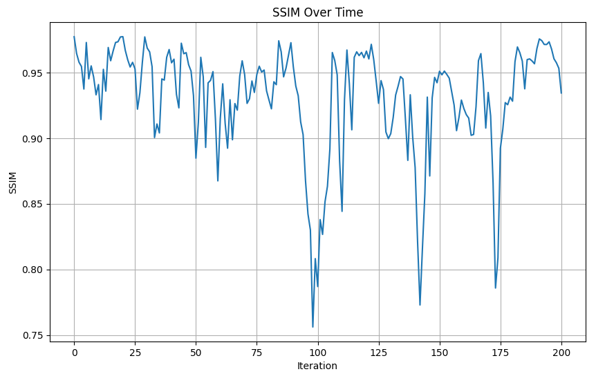
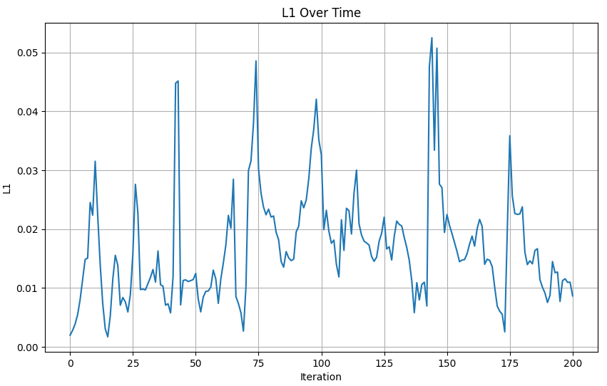

在线重建模块能够达到27.61dB的PSNR和1.70cm的深度L1误差，下图展示了以Gibson Denmark场景为例的重建质量随帧序列的变化情况。

在线重建彩色图

在线重建深度图

PSNR逐帧评估

SSIM逐帧评估

LPIPS逐帧评估

深度L1逐帧评估
| 指标 | 训练集 | 测试集 |
|---|---|---|
| PSNR (dB) | 25.28 | 21.72 |
| 深度L1 (cm) | 1.91 | 9.01 |
| MS-SSIM | 0.83 | 0.76 |
| LPIPS | 0.22 | 0.29 |